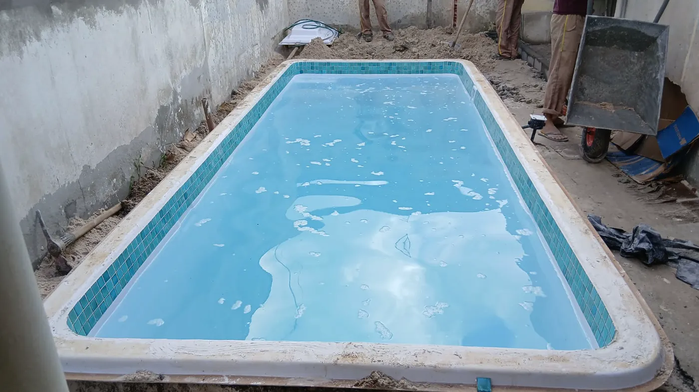
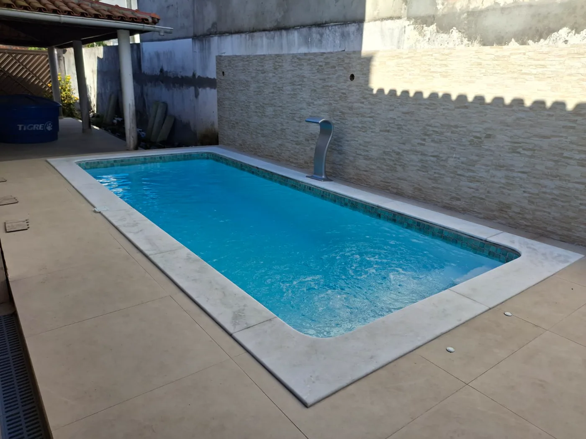

01 · Piscinas
Um espaço para reunir.
Modelos de fibra para diferentes áreas, com orientação para escolher de forma mais segura.
Entender como funciona →Piscinas de fibra e spas em Camaçari, Salvador e região
A Linha Verde orienta a escolha e acompanha os próximos passos para transformar seu espaço com piscina, spa ou hidromassagem.
O que você imagina para o seu espaço?
Piscinas e spas atendem desejos diferentes. Por isso, a Linha Verde apresenta cada solução a partir do que ela pode proporcionar — e do que o seu espaço realmente permite.
Modelos de fibra para diferentes áreas, com orientação para escolher de forma mais segura.
Entender como funciona →Hidromassagem, conforto e bem-estar para criar um refúgio dentro de casa.
Conhecer opções →Ainda não sabe qual solução faz mais sentido? Você não precisa decidir antes de conversar.
Pedir uma orientação inicialProjetos reais
Registros reais ajudam você a visualizar tamanhos, acabamentos e possibilidades de instalação antes de iniciar a conversa.
Uma piscina não chega pronta ao quintal. Preparação, instalação e acabamento fazem parte da transformação — e mostrar o processo ajuda a tornar a decisão mais segura.


Mais ambientes reais
Conheça melhor a Linha Verde
Veja produtos, projetos e novidades no Instagram ou consulte o perfil da empresa no Google antes de iniciar a conversa.
Conheça modelos de piscinas, spas, banheiras e registros publicados pela empresa.
Acessar perfil GoogleConsulte as informações e avaliações públicas diretamente no resultado do Google.
Ver no Google BlogCompare alternativas e entenda os pontos que merecem atenção antes da compra.
Ler os artigosLinha Verde Spas e Piscinas
A compra de uma piscina ou spa envolve espaço, uso, instalação e investimento. Por isso, o atendimento começa pela compreensão do que você busca para indicar possibilidades coerentes com sua casa.
Receber uma orientação inicialComunicação direta e linguagem simples do primeiro contato aos próximos passos.
Análise do espaço, da rotina e das expectativas antes da decisão.
Alternativas para quintais compactos, áreas familiares e ambientes mais amplos.
Do quintal à primeira água
Em vez de escolher apenas por uma foto, comece pelo espaço, pelas necessidades e pelos próximos passos da instalação.
O espaço
Cidade, medidas aproximadas e algumas imagens já ajudam a iniciar uma orientação mais objetiva.
A escolha
O objetivo é comparar opções coerentes com o espaço e com a forma como sua família pretende usar a piscina ou spa.
A instalação
Preparação, instalação e acabamento fazem parte do processo. Registros reais ajudam a visualizar essa evolução.
O resultado
Com o projeto concluído, ele passa a ser um lugar de convivência, descanso e lazer dentro de casa.
Comece pelo que você já tem
Você não precisa chegar com o modelo escolhido. Responda três perguntas rápidas e abra o WhatsApp com uma mensagem já preparada para o atendimento.
Prefiro enviar uma foto direto pelo WhatsAppAtendimento regional
Acesse a página da sua cidade e conheça as informações de atendimento local.
Perguntas frequentes
Não encontrou sua dúvida? Envie uma mensagem e explique o que você precisa.
Tirar uma dúvidaSim. A empresa atende Camaçari com venda e instalação de piscinas, spas e soluções para áreas de lazer.
Sim. O atendimento também alcança Salvador, Lauro de Freitas, Simões Filho, Candeias e Mata de São João, conforme avaliação do projeto.
Não. Você pode iniciar o atendimento enviando fotos, medidas aproximadas e explicando como deseja usar o espaço.
Sim. Informe sua cidade e envie fotos do local para receber uma orientação inicial sobre possibilidades e próximos passos.
Sim. Além de piscinas, a Linha Verde apresenta soluções de spas e hidromassagens para áreas residenciais.
Seu projeto pode começar com uma foto
Envie uma foto do espaço, sua cidade e uma medida aproximada. A conversa começa pela orientação, não pela obrigação de comprar.